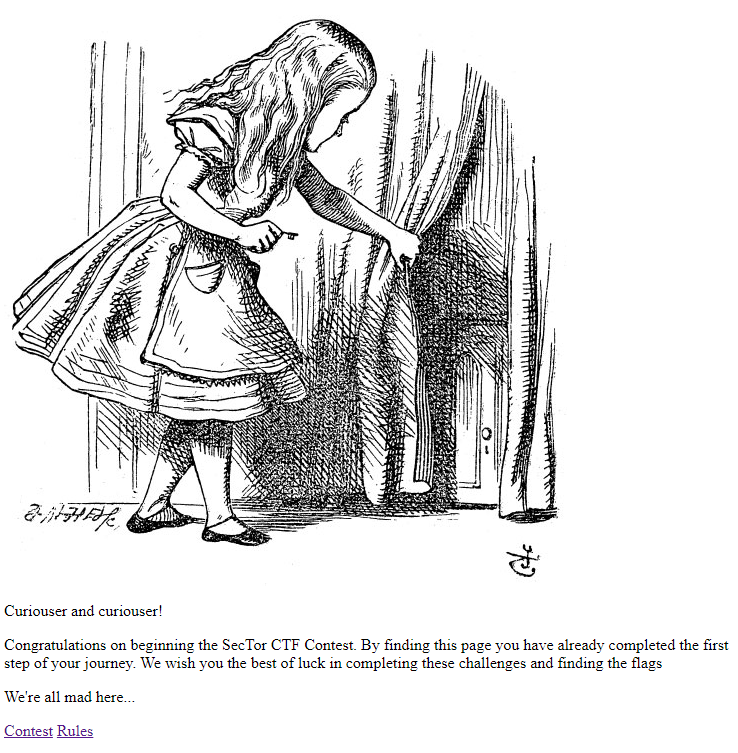
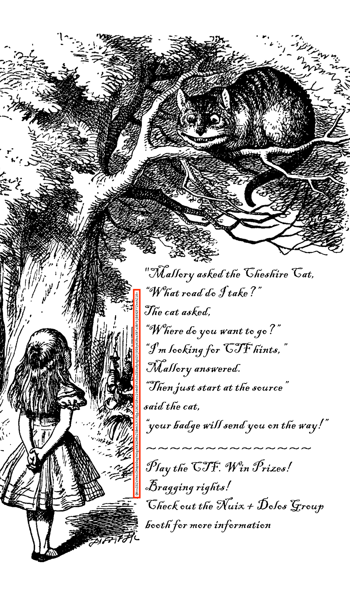
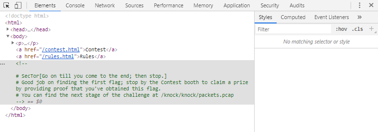
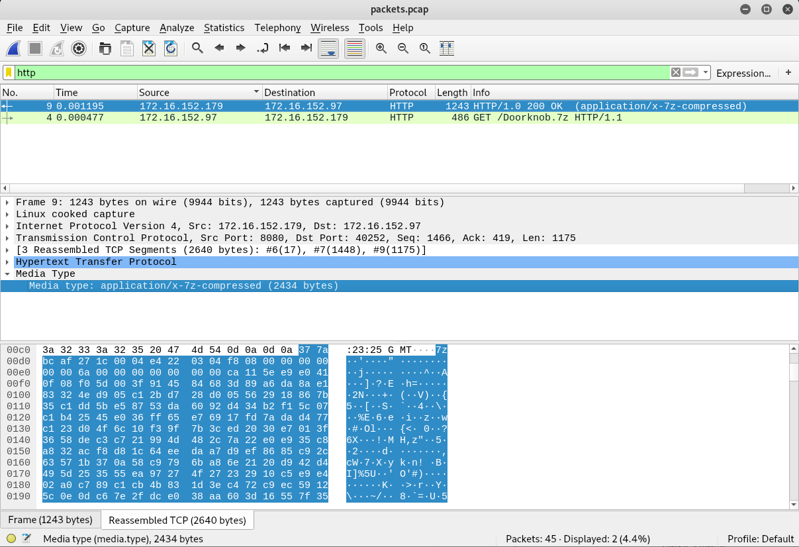
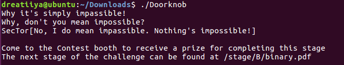

on
SecTor 2019
SecTor is one of Canada’s biggest security conference and I was lucky enough to snag a ticket from OWASP Toronto Chapter.
It is also the first security event that I went together with folks from @ecobee. Lee – my super supportive boss – even had extra tickets for me to participate in the after-party. Unfortunately, I had classes that night. Boooooooo!!
SecTor 2019 CTF
Event name: SecTor 2019
Location: Metro Toronto Convention Centre
Date: 09/10/2019 - 10/10/2019
Team: Individual
Upon registration, all attendees are given a physical copy of a pocket guide that details the conference details. Looking closely at one of the pages, we can see that a CTF is totally taking place!

Flag 1
Squinting at the far left of the image, we see a base64 encoded string, interesting! Following the instructions on the page, I eventually found the Nuix + Dolos Group booth at Hall 700 and was given the link to the CTF platform: sector2019ctf.online.
Here’s the cute entrance page we are greeted with!

We first started out by taking a quick look at the source code via developer tools. Oh hey an image was commented out! Accessing sectorctf2019.online/images/2019_pocket_guide.png led us to a blown up image of what we see in the physical guide book. Great! Now we can programmatically extract the base64 text to decode them!


Initially, we went through the long process of rotating the image, cropping the base64 text and run them though an online Optical Character Recognition tool. We eventually realized that we can actually just open up the image as text (rename the png extension to txt, or plain old strings command) to grab the string. Simple!
Nevertheless, we got our string and here’s what is was decoded to:
echo "QWxsIGZsYWdzIHdpbGwgYmUgdXNlIHRoZSBmb3JtYXQgJ1NlY1RvcltmbGFnXScuIEUuRy4gU2VjVG9yW1RoaXNfaXNfbjB0X2FfZmxhZ10=" | base64 --decode
All flags will be use the format 'SecTor[flag]'. E.G. SecTor[This_is_n0t_a_flag]
Aww man, it wasn’t a flag :(
But that’s okay, because clicking through other links on the webpage led us to your flag with the abovementioned flag format! Woohooo!

Flag 1: SecTor[Go on till you come to the end, then stop.]
Flag 2
Based on the instructions on the first flag, we proceed to sectorctf2019.online/knock/knock/packets.pcap and were given a pcap file. As the extension suggests, its a wireshark file. Filtering the results for http and http2, we spotted something! It seems that our victim was trying to download an achieved file from sectorctf2019.online/Doorknob.7z.
Let’s try to download them via wget…

Nope, we got 404 status code. That’s fine because wireshark could totally help us achieve the same result since wireshark captured the complete file bytes of the 7zip file.
We can recreate this zip file by right clicking the highlighted bytes and select Export Packet Bytes. A cursory search on Google teaches us that 7z is another form of zip file, unfortunately, unzipping via Linux command proves to be rather hard, so we went through the long route of transferring the file over to Windows, extract them, then return it back to our Kali Linux virtual machine.

Here comes the weird part – the extracted Doorknob file doesn’t run even with permissions granted via chmod +x Doorknob. So frustrating!
It was only after running the file command when we realized what went wrong – the environment we are running the file on!
Doorknob: ELF 64-bit LSB pie executable, x86-64, version 1 (SYSV), dynamically linked, interpreter /lib64/ld-linux-x86-64.so.2, for GNU/Linux 3.2.0, BuildID[sha1]=b56ea019612628ce072f1a58c5708bcaad3d3934, not stripped
Doorknob here is says it runs on x86-64, perhaps our virtual machine is not of the same environment? The uname -m command revealed that our suspicion was right. Kali Linux runs on i686! Thank god we have an Ubuntu - which conveniently runs on the required environment - virtual machine at hand!
Yep, we got our flag!

Flag 2: SecTor[No, I do mean impassible. Nothing’s impossible!]
Flag 3
Downloading sectorctf2019.online/stage/B/binary.pdf, we obtain a rather interesting PDF file – we see a bunch of binary numbers!
01010110 01101101 01001110 01110010 01001001 01000111 01010010 01110000 01100010 01101101
00110101 00110110 01100100 00110010 01001010 00110001 01001001 01000111 00111001 00110110
[TRUNCATED]
01101000 01110100 01011001 00110010 01010010 01111000 01001001 01000101 01100111 01100111
01011010 01101101 01010010 01111010 01001100 01100111 00111101 00111101
Converting these binary to ascii with space as the delimiter, we obtain a base64 string which can further be decoded to the output shown below.

Hmm, the output doesn’t make sense. But it seems that this could be a ROT13 cipher, given that its linguistic properties look awfully similar English’s structure. Going with that line of thought, we can identify words with single letters to be either a or I. The fact that different lines of single letter words are encoded in different letters suggests that each line might be wrapped with different values.
[TRUNCATED]
Rfc fsppgcp G em,
sgd adghmcdq H fds.
It turns out we were right, each line of this output requires a decreasing amount of wrap! Starting with 12 down to 1, here’s the output we get:
How puzzling all these chanes are!
I'm never sure what I'm going to be,
from one minute to another.
I don't see how he can ever finish[
if he doesn't begin]
The time has come, the walrus said
to tal, of many things[
Of shoes and ships ]
and sealig wax -
Password[Of c4bbag3s and k1ngs]
The hurrier I go,
the behinder I get.
Anddddd… I officially gave up here. Let’s hope someone wrote a writeup about this challenge so I can figure out what I missed!